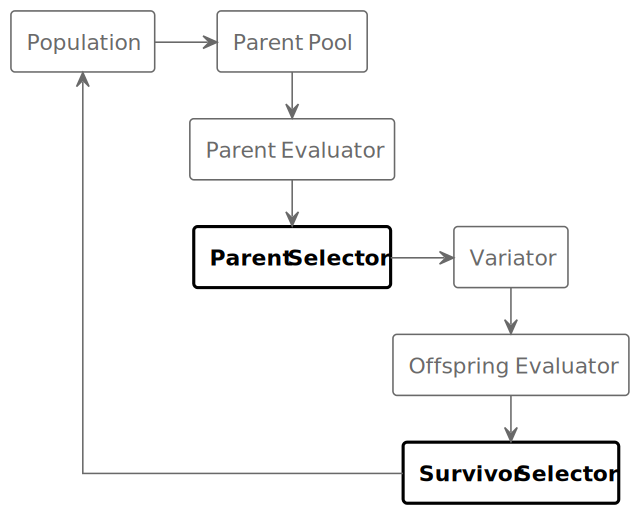

Creating a Custom Selector
[1]:
import os
import sys
nb_dir = os.path.abspath(os.path.join('..', '..', '..', '..'))
if nb_dir not in sys.path:
sys.path.append(nb_dir)
In an evolutionary algorithm, a selector selects from a set of individuals into a strict subset. The following diagram illustrates where selection occurs in a typical evolutionary algorithm:
.
[2]:
from evokit.core import Population
from evokit.evolvables.binstring import BinaryString
To use a selector, first create a Population. This example uses the binary string representation.
[3]:
pop : Population[BinaryString] = Population[BinaryString]()
pop.append(BinaryString(int('11111', 2), 5))
pop.append(BinaryString(int('11110', 2), 5))
pop.append(BinaryString(int('11100', 2), 5))
pop.append(BinaryString(int('11000', 2), 5))
pop.append(BinaryString(int('10000', 2), 5))
pop.append(BinaryString(int('00000', 2), 5))
print(pop)
['[1, 1, 1, 1, 1]', '[1, 1, 1, 1, 0]', '[1, 1, 1, 0, 0]', '[1, 1, 0, 0, 0]', '[1, 0, 0, 0, 0]', '[0, 0, 0, 0, 0]']
To make things easier, manually assign a .fitness to each item in the population. This is normally done by a pre-defined Evaluator.
[4]:
pop[0].fitness = 5
pop[1].fitness = 4
pop[2].fitness = 3
pop[3].fitness = 2
pop[4].fitness = 1
pop[5].fitness = 0
Verify that all individuals are correctly evaluated:
[5]:
for individual in pop:
print(f"Fitness of {individual} is {individual.fitness}")
Fitness of [1, 1, 1, 1, 1] is 5
Fitness of [1, 1, 1, 1, 0] is 4
Fitness of [1, 1, 1, 0, 0] is 3
Fitness of [1, 1, 0, 0, 0] is 2
Fitness of [1, 0, 0, 0, 0] is 1
Fitness of [0, 0, 0, 0, 0] is 0
Selector
The abstract class Selector implements three methods:
.selectdefines the strategy for a single selection operation. It has no default implementation..select_to_manyapplies the.selectto a collection of individuals. It also handles the removal of selected individuals from the original population. The default implementation repeatedly applies .select_to_many, until.budgetitems are selected..select_to_populationapplies the.select_to_manyto a population.
In general, a custom selector must override .select. A selector that requires information from the entire population (e.g. a fitness sharing selector) may override .select_to_many. Do not override .select_to_population - define a new method that uses .select_to_many to select from something else.
class Selector(ABC, Generic[D]):
def __init__(self: Self, budget: int): ...
def select_to_population(self,
population: Population[D]) -> Population[D]: ...
def select_to_many(self, population: Population[D]) -> Tuple[D, ...]:
...
@abstractmethod
def select(self,
population: Population[D]) -> Tuple[D, ...]: ...
Define a custom selector. Because the implementation does not provide its own way to decide how many items to select, it must have the .budget attribute. There are many ways to do it; this example uses the super constructor.
The .select method returns a tuple of items from a population. Because the ExampleSimpleSelector only selects the best individual, .select should return a 1-tuple.
[6]:
from typing import override, Self, Tuple
from evokit.core import Selector
class ExampleSimpleSelector(Selector[BinaryString]):
"""Simple selector that select the highest-fitness individual.
Example for overriding `select`.
"""
@override
def __init__(self: Self):
super().__init__(3)
def select(self,
population: Population[BinaryString]) -> Tuple[BinaryString]:
population.sort(lambda x: x.fitness)
selected_solution = population[0]
return (selected_solution,)
Apply the selector to the population. Because the selected individual is not removed from the original population, the selector always chooses [1,1,1,1,1] - the individual with the highest fitness.
[7]:
old_pop = pop
selector = ExampleSimpleSelector()
for _ in range(3):
selected_items = selector.select(old_pop)
print(f"Selected items are {[str(x) for x in selected_items]}")
print(f"After selection, the old population is {old_pop}")
Selected items are ['[1, 1, 1, 1, 1]']
Selected items are ['[1, 1, 1, 1, 1]']
Selected items are ['[1, 1, 1, 1, 1]']
After selection, the old population is ['[1, 1, 1, 1, 1]', '[1, 1, 1, 1, 0]', '[1, 1, 1, 0, 0]', '[1, 1, 0, 0, 0]', '[1, 0, 0, 0, 0]', '[0, 0, 0, 0, 0]']
Observe the effect of select_to_many. With .budget=3, .select_to_many returns a 3-tuple. Note that items in the returned tuple are removed from the original population.
Calling .select_to_population produces the same result, except that it returns a population with 3 items.
[8]:
old_pop = pop
selector = ExampleSimpleSelector()
selected_items = selector.select_to_many(old_pop)
print(f"Selected items are {[str(x) for x in selected_items]}")
print(f"After selection, the old population is {old_pop}")
Selected items are ['[1, 1, 1, 1, 1]', '[1, 1, 1, 1, 0]', '[1, 1, 1, 0, 0]']
After selection, the old population is ['[1, 1, 0, 0, 0]', '[1, 0, 0, 0, 0]', '[0, 0, 0, 0, 0]']